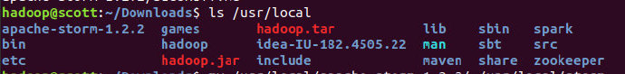

环境配置
Strom
下载
首先从官网下载Strom压缩包，这里以最新的Strom1.2.2作为演示。
解压到/usr/local：
sudo tar xzvf apache-storm-1.2.2.tar.gz -C /usr/local
查看解压文件：
- 
需要重命名：
sudo mv /usr/local/apache-storm-1.2.2/ /usr/local/storm
修改拥有者：
sudo chown -R hadoop:hadoop storm
添加到环境变量
vim ~/.bashrc export STROM=/usr/local/storm source ~/.bashrc
修改配置文件
进入软件目录，修改文件
storm.yamlcd /usr/local/storm/ sudo vim conf/storm.yaml
修改为本地server：
storm.zookeeper.servers: - "localhost" nimbus.seeds: ["localhost"] supervisor.slots.ports: - 6700 - 6701 - 6702 - 6703 storm.zookeeper.port: 2181 storm.local.dir: "/usr/local/storm/storm-local" storm.health.check.dir: "healthchecks" storm.health.check.timeout.ms: 5000
Python
- 检查是否有高于2.6版本的python：
启动storm
修改执行脚本
参考这里修改脚本，主要是修改python的路径
先查找自己的python路径：
ls /usr/bin/python*
找到执行脚本，在
./bin/storm中，根据之前的python路径修改
启动
执行命令：
nohup storm nimbus >/dev/null 2>&1 & nohup storm supervisor >/dev/null 2>&1 & nohup storm ui >/dev/null 2>&1 &这里的
2>&1表示就是把所有标准输出（&1）和标准出错（2）都扔到垃圾桶里面，最后的&表示后台执行
这里可能需要几分钟才能完成启动，使用
jps命令查看可以看到nimbus, supervisor, core：在浏览器中
localhost:8080上查看集群情况：成功！
测试运行
示例
/usr/local/storm/example目录下的storm-starter里有很多Storm的项目，比如DRPC、Word Count。在该目录路径下使用maven来打包
Stormjar包首先找到该目录：
我们发现该目录是用
maven进行打包的：因此，我们可以使用IDEA来打包，也可以直接使用mvn：
mvn clean install -Dmaven.test.skip=true mvn package
Stream Join的简单实例
WordCount
SentenceSpout.java
该文件为模拟外部输入
import java.util.Map;
import java.util.UUID;
import org.apache.storm.spout.SpoutOutputCollector;
import org.apache.storm.task.TopologyContext;
import org.apache.storm.topology.OutputFieldsDeclarer;
import org.apache.storm.topology.base.BaseRichSpout;
import org.apache.storm.tuple.Fields;
import org.apache.storm.tuple.Values;
import org.apache.storm.utils.Utils;
public class SentenceSpout extends BaseRichSpout {
private SpoutOutputCollector spoutOutputCollector;
private String[] sentences = {"the cow jumped over the moon", "an apple a day keeps the doctor away",
"four score and seven years ago", "snow white and the seven dwarfs", "i am at two with nature"};
public void open(Map map, TopologyContext topologycontext, SpoutOutputCollector spoutoutputcollector) {
this.spoutOutputCollector = spoutoutputcollector;
}
public void nextTuple() {
for (String sentence : sentences) {
Values values = new Values(sentence);
UUID msgId = UUID.randomUUID();
this.spoutOutputCollector.emit(values, msgId);
}
Utils.sleep(1000);
}
public void declareOutputFields(OutputFieldsDeclarer outputfieldsdeclarer) {
outputfieldsdeclarer.declare(new Fields("sentence"));
}
}
SplitSentenceBolt.java
分割字符的bolt
import java.util.Map;
import org.apache.storm.task.OutputCollector;
import org.apache.storm.task.TopologyContext;
import org.apache.storm.topology.OutputFieldsDeclarer;
import org.apache.storm.topology.base.BaseRichBolt;
import org.apache.storm.tuple.Fields;
import org.apache.storm.tuple.Tuple;
import org.apache.storm.tuple.Values;
public class SplitSentenceBolt extends BaseRichBolt {
private OutputCollector outputCollector;
public void execute(Tuple tuple) {
String sentence = tuple.getStringByField("sentence");
String[] words = sentence.split(" ");
for (String word : words) {
this.outputCollector.emit(new Values(word));
}
}
public void prepare(Map map, TopologyContext topologycontext, OutputCollector outputcollector) {
this.outputCollector = outputcollector;
}
public void declareOutputFields(OutputFieldsDeclarer outputfieldsdeclarer) {
outputfieldsdeclarer.declare(new Fields("word"));
}
}
WordCountBolt.java
统计次数的bolt
import java.util.HashMap;
import java.util.Map;
import org.apache.storm.task.OutputCollector;
import org.apache.storm.task.TopologyContext;
import org.apache.storm.topology.OutputFieldsDeclarer;
import org.apache.storm.topology.base.BaseRichBolt;
import org.apache.storm.tuple.Fields;
import org.apache.storm.tuple.Tuple;
import org.apache.storm.tuple.Values;
public class WordCountBolt extends BaseRichBolt {
private OutputCollector outputCollector;
private HashMap<String, Integer> counts = null;
public void prepare(Map map, TopologyContext topologycontext, OutputCollector outputcollector) {
this.outputCollector = outputcollector;
this.counts = new HashMap<String, Integer>();
}
public void execute(Tuple tuple) {
String word = tuple.getStringByField("word");
Integer count = counts.get(word);
if (count == null) {
count = 0;
}
count++;
this.counts.put(word, count);
this.outputCollector.emit(new Values(word, count));
this.outputCollector.ack(tuple);
System.out.println(word + ": " + count);
}
public void declareOutputFields(OutputFieldsDeclarer outputfieldsdeclarer) {
outputfieldsdeclarer.declare(new Fields("word", "count"));
}
}
WordCountTopology.java
主函数
import org.apache.storm.Config;
import org.apache.storm.LocalCluster;
import org.apache.storm.topology.TopologyBuilder;
import org.apache.storm.tuple.Fields;
public class WordCountTopology {
public static void main(String[] args) throws Exception {
SentenceSpout sentenceSpout = new SentenceSpout();
SplitSentenceBolt splitSentenceBolt = new SplitSentenceBolt();
WordCountBolt wordCountBolt = new WordCountBolt();
TopologyBuilder builder = new TopologyBuilder();
builder.setSpout("sentenceSpout-1", sentenceSpout);
builder.setBolt("splitSentenceBolt-1", splitSentenceBolt).shuffleGrouping("sentenceSpout-1");
builder.setBolt("wordCountBolt-1", wordCountBolt).fieldsGrouping("splitSentenceBolt-1", new Fields("word"));
Config config = new Config();
LocalCluster cluster = new LocalCluster();
cluster.submitTopology("wordCountTopology-1", config, builder.createTopology());
Thread.sleep(999999999);
cluster.shutdown();
}
}
运行
使用已经编译好的
WordCountjar包，提交任务：storm jar wordcount.jar WordCountTopology wc这里
WordCountTopoloy为主class，wc为任务别名
可以看见，WordCount的统计是不断变化的：
Stream Join
SimpleJoinBolt.java
这里主要处理join的过程
import org.apache.storm.Config;
import org.apache.storm.generated.GlobalStreamId;
import org.apache.storm.task.OutputCollector;
import org.apache.storm.task.TopologyContext;
import org.apache.storm.topology.OutputFieldsDeclarer;
import org.apache.storm.topology.base.BaseRichBolt;
import org.apache.storm.tuple.Fields;
import org.apache.storm.tuple.Tuple;
import org.apache.storm.utils.TimeCacheMap;
import java.util.ArrayList;
import java.util.HashMap;
import java.util.HashSet;
import java.util.List;
import java.util.Map;
import java.util.Set;
public class SimpleJoinBolt extends BaseRichBolt {
private OutputCollector _collector;
private Fields _outFields;
private Fields _idFields;
int _numSources;
Map<String, GlobalStreamId> _fieldLocations;
//在内存中保留近期活跃的对象
//由于bolt在接收两个数据源的流数据时，同一id两个数据流很可能不会再一个时间点同时发出，因此需要对数据流先进行缓存，直到所有
//id相同的数据源都被后被聚合处理，做完聚合处理后再将对应的tuple信息从缓存中删除。在
TimeCacheMap<List<Object>,Map<GlobalStreamId, Tuple>> _pending;
//传进的Fields是聚合后将被输出的字段
public SimpleJoinBolt(Fields outFields){
this._outFields=outFields;
}
public void execute(Tuple tuple) {
// TODO Auto-generated method stub
//从tuple中获取_idFields字段，如果不存在于等待被处理的队列_pending中，则加入一行
List<Object> id=tuple.select(_idFields);
GlobalStreamId streamId=new GlobalStreamId(tuple.getSourceComponent(),tuple.getSourceStreamId());
//打印当前处理元组的来源Spout
System.out.println("元组来源："+tuple.getSourceComponent());
//打印当前元组
System.out.println("接收的元组："+tuple.getFields().get(0)+" = "+tuple.getValues().get(0)+" , "+tuple.getFields().get(1)+" = "+tuple.getValues().get(1));
//如果当前pending中还不存在join key为此id的元组，则将该条记录加入
if(!_pending.containsKey(id)){
_pending.put(id, new HashMap<GlobalStreamId,Tuple>());
}
//从_pending队列中获取当前GlobalStreamId对应的HashMap对象
Map<GlobalStreamId,Tuple> parts=_pending.get(id);
//如果streamId已经包含其中，则抛出异常，接收到同一个spout中的两条一样id的tuple，否则将该streamId加入parts中
if(parts.containsKey(streamId)){
throw new RuntimeException("Received same side of single join twice");
}
parts.put(streamId, tuple);
//如果parts中已经包含了聚合数据源的个数，则从_pending队列中移除这条记录
if(parts.size()==_numSources){
_pending.remove(id);
List<Object> joinResult=new ArrayList<Object>();
for(String outField:_outFields){
GlobalStreamId loc=_fieldLocations.get(outField);
joinResult.add(parts.get(loc).getValueByField(outField));
}
//输出聚合结果
System.out.print("两条关系流中id值为"+id.get(0)+"的元组均已收到，聚合结果为：");
for(Object obj:joinResult){
System.out.print(obj+" ");
}
System.out.println();
//多锚定
_collector.emit(new ArrayList<Tuple>(parts.values()),joinResult);
for (Tuple part : parts.values()) {
_collector.ack(part);
}
}else{
System.out.println("只从一个关系流中收取到id值为"+id+"的元组，不可进行join操作");
}
}
public void prepare(Map conf, TopologyContext context, OutputCollector collector) {
// TODO Auto-generated method stub
_fieldLocations = new HashMap<String, GlobalStreamId>();
this._collector=collector;
//创建TimeCacheMap对象，设置超时回调接口，用于tuple处理失败时fail消息
int timeout=((Number)conf.get(Config.TOPOLOGY_MESSAGE_TIMEOUT_SECS)).intValue();
_pending=new TimeCacheMap<List<Object>,Map<GlobalStreamId,Tuple>>(timeout,new ExpireCallback());
//记录数据源的数据个数
_numSources=context.getThisSources().size();
Set<String> idFields=null;
//遍历TopologyContext中不同的数据源:genderSpout和ageSpout
System.out.println(context.getThisSources().keySet());
for(GlobalStreamId source:context.getThisSources().keySet()){
//得到公共的Fields字段id,保存到_idFields中
Fields fields=context.getComponentOutputFields(source.get_componentId(),source.get_streamId());
//fields:[id,gender],[id,age]
Set<String> setFields=new HashSet<String>(fields.toList());
if(idFields==null){
idFields=setFields;
}else{
//求交集
idFields.retainAll(setFields);
System.out.println(idFields);
}
//同时将_outFields中字段所在数据源记录下来，保存到一张HashMap _fieldLocations中，以便聚合后获取对应的字段值
for(String outfield:_outFields){
for(String sourcefield:fields){
if(outfield.equals(sourcefield)){
_fieldLocations.put(outfield, source);
}
}
}
//打印结果:gender=GlobalStreamId(componentId=gender-spout,streamId=default)
//age=GlobalStreamId(componentId=age-spout,streamId=default)
System.out.println(_fieldLocations);
}
_idFields=new Fields(new ArrayList<String>(idFields));
if(_fieldLocations.size()!=_outFields.size()){
throw new RuntimeException("Cannot find all outfields among sources");
}
}
public void declareOutputFields(OutputFieldsDeclarer declarer) {
// TODO Auto-generated method stub
declarer.declare(_outFields);
}
private class ExpireCallback implements TimeCacheMap.ExpiredCallback<List<Object>, Map<GlobalStreamId,Tuple>>{
public void expire(List<Object> key, Map<GlobalStreamId, Tuple> tuples) {
// TODO Auto-generated method stub
for(Tuple tuple:tuples.values()){
_collector.fail(tuple);
}
}
}
}
SingleJoinExample.java
这里处理两个spout和setBolt过程
import org.apache.storm.Config;
import org.apache.storm.LocalCluster;
import org.apache.storm.testing.FeederSpout;
import org.apache.storm.topology.TopologyBuilder;
import org.apache.storm.tuple.Fields;
import org.apache.storm.tuple.Values;
import org.apache.storm.utils.Utils;
public class SingleJoinExample {
public static void main(String[] args) {
FeederSpout genderSpout = new FeederSpout(new Fields("id", "gender"));
FeederSpout ageSpout = new FeederSpout(new Fields("id", "age"));
TopologyBuilder builder = new TopologyBuilder();
builder.setSpout("gender", genderSpout);
builder.setSpout("age", ageSpout);
builder.setBolt("join", new SimpleJoinBolt(new Fields("gender", "age")))
.fieldsGrouping("gender", new Fields("id"))
.fieldsGrouping("age", new Fields("id"));
Config conf = new Config();
conf.setMaxTaskParallelism(3);
LocalCluster cluster = new LocalCluster();
cluster.submitTopology("join-bolt", conf, builder.createTopology());
for (int i = 0; i < 100; i++) {
String gender;
if (i % 2 == 0) {
gender = "male";
}
else {
gender = "female";
}
genderSpout.feed(new Values(i, gender));
}
for (int i = 100; i >= 0; i--) {
ageSpout.feed(new Values(i, i + 20));
}
Utils.sleep(2000);
cluster.shutdown();
}
}
运行
首先生成JAR包，然后执行：
storm jar ds.jar SingleJoinExample join
运行结果为：
可以看见，当接收到的元祖没有匹配的id时，会等待另一个元祖到来，然后再聚合。